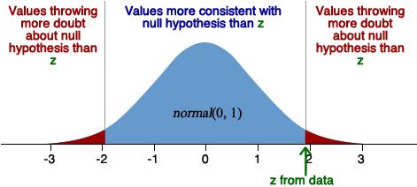

Tests about a normal distribution
In this section, we concentrate on data that can be assumed to be a random sample from a \(\NormalDistn(\mu, \sigma^2)\) distribution. We will develop hypothesis tests about the normal distribution's parameters.
Initially we assume that the normal distribution's variance, \(\sigma^2\), is a known value.
Active ingredient in medicine
Pharmaceutical companies routinely test their products to ensure that the amount of active ingredient is within tight limits. However the chemical analysis is not precise and repeated measurements of the same specimen usually differ slightly. One type of analysis gives results that are normally distributed with a mean that depend on the actual product being tested and standard deviation 0.0068 grams per litre.
A product is tested three times with the following concentrations of the active ingredient:
0.8403, 0.8363 and 0.8447 grams per litre
Are the data consistent with the target concentration of 0.85 grams per litre? This can be expressed as a hypothesis test comparing...
The test may be two-tailed as in the above example, but in some situations a one-tailed is needed, with the alternative hypothesis only specifying only high (or low) values of \(\mu\), such as
where \(\mu_0\) is a known constant.
Test statistic
The sample mean, \(\overline{X}\), could be used as a test statistic since
However, in practice, it is easier to use its standardised version as the test statistic,
\[ Z \;\;=\;\; \frac{\overline{X} - \mu_0}{\diagfrac{\sigma}{\sqrt{n}}} \]This has a standard normal distribution, \(Z \sim \NormalDistn(0,1)\) if the null hypothesis is true.
P-value and interpretation
The p-value for the test is found by comparing the value of the test statistic (evaluated from the data set) to the standard normal distribution. For a one-tailed test, this is one tail area of the distribution, but for a two-tailed test, it is double the smaller tail area since values of \(\overline{X}\) below \(\mu_0\) give the same evidence against H0 as values above it.
The p-value is interpreted in the same way as for all other hypothesis tests. A small value means that a value of \(\overline{X}\) as far as was observed from \(\mu_0\) would be unlikely if the null hypothesis was true, and this provides evidence suggesting that the alternative hypothesis is true. The diagram below illustrates for a 2-tailed test.

Active ingredient in medicine
For the above data set, \(\overline{x} = 0.8404\), giving a test statistic
\[ z \;\;=\;\; \frac{0.8404 - 0.85}{0.0068\;/\;\sqrt{3}} \;\;=\;\; -2.437 \]The lower tail of the standard normal distribution below this value is
\[ P(Z \le -2.437) \;\;=\;\; 0.00741 \]Since the test is two-tailed (and sample means as far above 0.85 as 0.8404 was below it would give equally strong evidence against \(\mu\) being 0.85), the p-value is double this,
p-value = \(2 \times 0.00741 \;\;=\;\; 0.0148\)
This p-value is interpreted as meaning that there is moderately strong evidence that the true concentration of active ingredient in this product, \(\mu\), is no longer equal to 0.85 grams per litre.